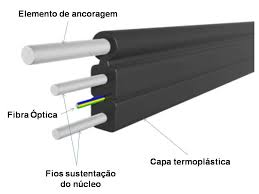

Fibra Óptica
A espinha dorsal da RL NET: Física, Manuseio e Diagnóstico Avançado
1 A Física da Luz: Como Funciona a Fibra Óptica
O que você está carregando na escada?
Não é um fio elétrico. É um guia de luz.
Ao contrário do cobre, que transporta elétrons (eletricidade) e sofre com raios, chuva e interferência de motores, a fibra óptica transporta fótons (luz).
Você está instalando um espelho tubular, mais fino que um fio de cabelo, capaz de transportar toda a enciclopédia do mundo em segundos.
Como a luz faz curva?
Se você acender uma lanterna num campo aberto, a luz vai em linha reta. Como fazemos ela viajar quilômetros fazendo curvas nos postes?
Usamos a física da Reflexão Interna Total. A fibra é composta por dois tipos de vidro:
-
NúcleoO centro por onde a luz passa. (9 mícrons de diâmetro).
-
CascaO vidro externo (Cladding) que funciona como um espelho perfeito, jogando a luz de volta para o núcleo.
TRANSMISSÃO DE DADOS (PULSOS)
Tipos de Fibra: Não Confunda!
1. Monomodo (Single Mode - SM)
É a que usamos na rua e na casa do cliente (Drop). O núcleo é extremamente fino (9µm). A luz viaja "direto", sem ricochetear tanto. Permite longas distâncias (KM).
Verde ou Azul (Varia conforme lote, mas é SM).
2. Multimodo (MM)
Núcleo mais grosso. Usada apenas dentro de Data Centers curtos. Não usamos em clientes.
Laranja ou Aqua.
Comprimentos de Onda (nm)
Sinal que sai da OLT e vai para a ONU (Internet chegando).
Sinal que sai da ONU e vai para a OLT (Upload do cliente).
Usado para TV a cabo sobre fibra (não comum em dados puros).
Risco Grave de Cegueira!
A luz da fibra é INVISÍVEL e queima a retina instantaneamente.
Você não sente dor, não vê o laser e não pisca. O dano é irreversível.
REGRA TÉCNICA:
O técnico deve SEMPRE configurar o Power Meter em 1490 nm para medir o sinal na casa do cliente. Medir em outra frequência dará um valor falso e causará reprovação da instalação.
2 Anatomia do Drop: O Que Tem Dentro?
Para trabalhar com fibra, você precisa conhecer a cirurgia do cabo. O cabo Drop que usamos na RL NET não é apenas plástico e vidro; ele é uma engenharia complexa projetada para aguentar sol, chuva e tração. Vamos dissecar o cabo.
Estrutura Interna
Imagem dropelementos.png não encontrada.Verifique se o arquivo está na pasta.
Mensageiro Metálico (Sustentação)
É o arame grosso que fica no topo. Ele serve para aguentar o peso do cabo no poste (tensão).
Elementos de Tração (FRP ou Aço)
Duas varetas rígidas que correm ao lado da fibra (sanduíche). Elas impedem que o cabo dobre demais ou estique a ponto de romper o vidro no meio.
A Fibra Óptica (Núcleo + Casca + Acrilato)
No centro de tudo está o filamento de vidro. Ele é revestido por uma "tinta" colorida (geralmente azul ou verde) chamada Acrilato.
Atenção: Quando você usa o alicate decapador, você está removendo o ACRILATO para expor o vidro nu.
3 Atenuação e Potência: A Matemática da Fibra
A luz que sai da OLT não chega com a mesma força na casa do cliente. Ela paga "pedágios" pelo caminho (conectores, emendas, curvas e splitters). Entender quanto de luz se perde é a diferença entre um técnico e um "passador de cabo".
dB vs dBm
É a "Temperatura" da fibra. É o valor que você lê no Power Meter. Mede a força da luz naquele ponto exato.
Ex: -20 dBm (Sinal Bom)
É a "Diferença". Quanto o sinal caiu ao passar por um conector ou splitter.
Ex: Perdi 3 dB no splitter.
Vilões da Atenuação (Onde a luz morre)
-
-0.5 dBConector (Par)
Cada vez que você conecta um patch cord na caixa ou na ONU. Se estiver sujo, a perda pode pular para -5 dB ou mais!
-
-0.5 dBAcoplador (Emenda Mecânica)
Usado para emendar cabo quebrado sem fusão. Útil em emergências, mas gera perda significativa se mal feito.
-
-0.1 dBFusão
Uma emenda feita na máquina de fusão tem perda quase zero.
-
VariávelMacrocurvatura (Dobra)
Se dobrar a fibra em 90º apertado, a luz "vaza" pela curva. Pode gerar atenuação de -3 dB a perda total (LOS).
A Matemática dos Splitters (Divisores Ópticos)
Em redes GPON (RL NET), usamos splitters passivos para dividir o sinal. Cada vez que dividimos a luz, a potência cai pela metade (3 dB).
Perda Típica
Perda Típica
Perda Típica
Perda Típica
Padrão de Sinal RL NET (Power Meter)
@ 1490nm| Faixa (dBm) | Status | Ação Técnica |
|---|---|---|
| > -8 dBm | SATURAÇÃO | Sinal muito forte. Pode queimar a ONU ou causar lentidão. Use um atenuador. |
| -8 a -18 dBm | EXCELENTE | Sinal perfeito. Instalação Aprovada. |
| -18 a -25 dBm | PADRÃO RL NET | Faixa operacional ideal da maioria das redes. Instalação Aprovada. |
| -25 a -27 dBm | ALERTA | Funciona, mas qualquer chuva ou dobra vai derrubar. Verifique conectores e curvas. Evite entregar assim. |
| < -27 dBm | CRÍTICO / LOS | ONU piscando LOS vermelho. Internet caindo. Refaça a conectorização ou verifique a CTO. |
4 A Arte da Conectorização: Onde o Sinal Passa (ou Corta)
Você pode ter a melhor fibra do mundo e o equipamento mais caro. Se o conector for mal feito, tudo foi em vão. O Conector de Campo (Fast Connector) é o ponto mais sensível de toda a rede. Um técnico de excelência se conhece pelo acabamento do seu conector.
SC/APC (Verde)
Angled Physical Contact
É o PADRÃO OFICIAL RL NET. A ponta da fibra é polida em um ângulo de 8º.
SC/UPC (Azul)
Ultra Physical Contact
Padrão antigo ou específico. A ponta é levemente convexa (quase reta).
Regra Universal
"COR COM COR. SEMPRE."
O Ritual da Conectorização Perfeita
Preparação (A Bota Esquecida)
Parece óbvio, mas é o erro nº 1: Coloque a bota (rosca) no cabo ANTES de tudo. Se você fizer a fusão ou montar o conector e esquecer a bota, terá que cortar e refazer tudo.
Decapagem (O Descascar)
Use o alicate de 3 furos ou o decapador de drop.
1. Remova a capa preta/colorida externa.
2. Remova o acrilato (a tinta colorida da fibra). O vidro deve ficar transparente.
Limpeza (O Barulhinho)
Use lenço de papel que não solta fiapo umedecido em Álcool Isopropílico. Passe na fibra nua até ouvir o "squeak" (barulho de vidro cantando).
NUNCA ASSOPRE A FIBRA. Sua boca joga saliva e gordura no vidro.
Clivagem (O Corte de Diamante)
Este é o momento crítico. Coloque a fibra no clivador usando o gabarito (geralmente entre 10mm e 12mm, verifique o manual do conector).
Corte suave. Não force. O corte deve ser reto (90º) e limpo.
Inserção e Travamento (A Barriga)
Insira a fibra clivada no Fast Connector com cuidado.
Vá empurrando até sentir um "batente". Empurre um milímetro a mais para criar uma leve curvatura ("barriga") na fibra dentro do conector.
Trave a trava amarela/preta e rosqueie a bota.
5 Diagnóstico e Reparo: O Doutor da Fibra
O cliente liga reclamando que "a internet está lenta" ou "caiu". O amador troca a ONU. O profissional diagnostica a fibra. Nesta seção, você aprenderá a ler os sinais vitais da rede e a realizar a cirurgia correta.
Power Meter: O Juiz Supremo
Nunca confie cegamente no sinal mostrado na página da ONU. O Power Meter é o único instrumento calibrado e preciso.
- Sempre meça na ponta do drop: Antes de ligar na ONU.
- Limpe antes de medir: Um conector sujo pode falsificar a leitura em até 5dB.
Triangulação de Sinal
O Mistério do Gargalo: Digamos que no sistema a ONU mostra -24dBm (Aceitável). Você pensa: "Tá tudo ok".
Mas ao medir na CTO ou na ponta do drop com Power Meter, dá -19dBm.
Isso indica um gargalo físico entre a ponta do drop e o chip da ONU. Pode ser o conector mecânico mal feito, o acoplador da roseta sujo ou a porta da ONU com poeira. Sempre compare os 3 valores!
CSI da Fibra: Identificando o Dano Visualmente
Marca de Estresse
Manchas brancas no cabo preto indicam que ele foi dobrado ou puxado violentamente. Provável ponto de atenuação.
Mordidas
Cães e Gatos adoram fibra. Procure por marcas de dentes ou capa mastigada nos drops baixos.
Cerol / Linha
Cortes limpos e profundos no meio do vão entre postes. Comum em áreas residenciais.
Esmagamento
Dentro de casa: Pés de sofá, portas fechando sobre o cabo ou grampos de fixação muito apertados.
Regra da Troca Completa
Na RL NET, prezamos pela qualidade a longo prazo. Se o drop estiver rompido no meio do vão (entre postes), NÃO FAÇA EMENDA NO MEIO DO CABO.
Substitua o lance inteiro, da CTO até a PTO (ou até o ponto de ancoragem mais próximo se for muito longo e permitido pela supervisão). Emendas no meio do vão pegam chuva, sol e acabam gerando atenuação futura, obrigando outro técnico a voltar lá em 1 mês.
Lixo de Fibra: Uma Arma Invisível
Os pedacinhos de fibra cortada (cleavage shards) são vidro puro, afiados como bisturi e quase invisíveis. Se cair no tapete do cliente, pode entrar no pé de uma criança ou pata de animal e viajar pela corrente sanguínea.
6 OTDR Avançado: O Raio-X da Rede
Quando o problema não está nas pontas, ele está no meio. Mas como achar um rompimento a 3km de distância sem olhar poste por poste? Usamos o OTDR (Optical Time Domain Reflectometer).
Como funciona? (O Efeito Morcego)
Imagine que você está em um túnel escuro e grita. Se houver uma parede a 100 metros, o eco demora um tempo para voltar. Se a parede estiver a 200 metros, demora mais.
O OTDR faz a mesma coisa, mas com luz. Ele envia um pulso de laser e mede o "eco" (reflexão) que volta.
Interpretando o Trace (Análise em Tempo Real)
Indica um Conector ou emenda mecânica. A luz bateu no vidro polido e refletiu forte.
Indica uma Fusão ou dobra. A luz passou, mas perdeu força (desceu o degrau) sem refletir muito.
Fim da linha. A fibra acabou ou foi cortada. O gráfico cai para o chão (ruído).
7 Cuidados na Passagem Interna (A Estética e a Física)
"O cliente não entende de dBm ou atenuação. Ele julga a qualidade da internet pelo acabamento do fio na parede da sala."
- Mantra da Qualidade RL NET
O Material: Cabo Drop Padrão
Na RL NET, a simplicidade e a robustez andam juntas. Utilizamos o mesmo cabo Drop da rede externa dentro da residência.
-
Padronização Total: Não há troca de cabo na entrada. O cabo que vem do poste entra direto até a ONU, evitando emendas desnecessárias que geram perda de sinal.
-
Rigidez: Como é o mesmo cabo da rua (com mensageiro de aço), ele é mais rígido. Exige cuidado redobrado nas curvas internas para não ficar esteticamente feio ou desencostar da parede.
-
Resistência: É muito mais resistente a pisões, móveis e mordidas de animais do que os cabos finos de fibra transparente.
O Vilão dos Cantos (90º)
O erro número 1 em instalações internas é "vincar" o cabo no canto da parede para ficar "bonito".
Tamanho de uma tampinha de garrafa
Nunca dobre em "L" perfeito. Faça uma curva suave.
Fixação: Pregos vs Cola
Grampo Miguelão
O mais seguro e durável.
Cola Quente
Esteticamente limpo, mas perigoso.
Furo Passante
Atravessar parede para o quarto.
8 Fixação e Ancoragem: A Arte de Esticar o Cabo
A fibra pode ter sinal perfeito, mas se a ancoragem for frouxa, o cabo "barriga". Se for muito esticada, a fibra atenua. Aprenda a diferença técnica entre os tipos de amarração e o padrão de isoladores da RL NET.
Na Rede Externa: O Poste
Padrão de Hardware RL NET
Isolador Plástico + Alça Pré-formada
Utilizamos exclusivamente a Alça Pré-formada para prender o cabo Drop no isolador (isolador plástico). A alça distribui a força de aperto por 20cm do cabo, evitando esmagar o núcleo (o que aconteceria se você usasse um nó ou arame liso).
1. Encabeçamento (Fim de Linha)

Quando usar? No primeiro e último poste do vão, ou quando o cabo faz uma curva de 90º (esquina).
- • O cabo é totalmente tracionado.
- • A alça pré-formada "abraça" o isolador e volta trançando no cabo.
- • É onde o cabo "morre" ou "nasce".
2. Passagem (Tangente)
Quando usar? Nos postes do meio do caminho, onde o cabo segue reto.
- • O cabo NÃO é cortado nem tracionado fortemente.
- • Ele apenas apoia no isolador.
- • Dica RL NET: Usamos uma alça pré-formada aplicada de forma "frouxa" ou laço específico para sustentar o peso sem travar o movimento longitudinal.
Na Casa do Cliente: A Fachada
O Gancho "S" e o Isolador
Não amarre o cabo no portão ou na grade. Use o Isolador Plástico com Parafuso e Bucha na parede.
É a técnica mais importante para evitar queimar a ONU. Antes do cabo entrar no furo da parede, faça uma pequena barriga em forma de "U" (loop) para baixo.
A água da chuva escorre pelo fio, chega na parte mais baixa do "U" e pinga no chão, em vez de entrar pelo furo e molhar a tomada ou a ONU.
Visualização da Pingadeira
Você concluiu o Módulo de Fibra Óptica!
Agora você domina a espinha dorsal da RL NET. Você entende a física da luz, sabe diagnosticar problemas invisíveis e executar reparos com precisão cirúrgica.